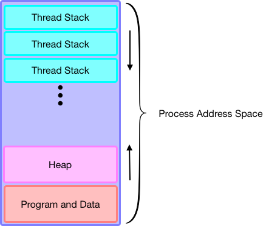

POSIX Thread Libraries
A thread is a path of execution within a process, it can be considered as a lightweight process (LWP), a process can also contain multiple threads.The standard library for creating a thread in your program lies in the POSIX layer in the Operating System. To get started with using pthread, the following system call allows you to create a new thread in your current process.
pthread_create()
int pthread_create(pthread_t *thread, const pthread_attr_t *attr, void *(*start_routine) (void *), void *arg);
The first argument in pthread_create() is a variable that holds the address that reference to the thread we create, and the second argument is which typed to pthread_attr_t is a variable that let us address the attributes of the thread such as priority. The third argument we need to supply to this system call is a function pointer that let the kernel knows where the thread should begin from and the fourth argument is the parameter we would like to pass to the function that we are going call from this thread.
Unlike fork() which returns an entirely independent copy of the process, a thread shares the address space within the same process. This feature allows threads to access the same data structures and variables, hence facilitates the communication between threads.

pthread_join()
int pthread_join(pthread_t thread, void **value_ptr);
Like fork(), if we would like to wait for the thread to finish and get back the result, we can use pthread_join(). It suspends the execution of the calling thread until the target thread terminates unless the target thread has alredy terminated. At this point, the second argument that is passed to pthread_join() will be set for whatever pointer value that is returned by the target function we were calling when pthread_create() is called. If the join is successful, it returns zero by default, otherwise an error number will be return.
Example
#include <stdio.h>
#include <pthread.h>
void* do_somthing(void* arg)
{
printf("%s", (char*) arg);
return NULL;
}
int main(int argc, char** argv)
{
pthread_t thread_id;
void* result;
...
pthread_create(&thread_id, NULL, do_somthing, "Hello, World");
...
pthread_join(thread_id, &result);
}